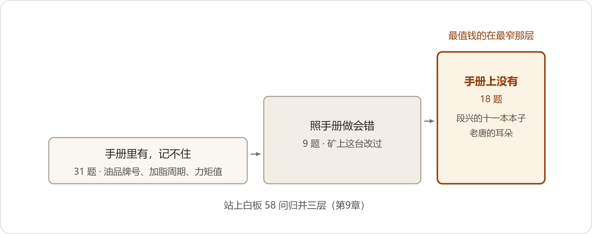

Duanxing's Backpack
8月4日，段兴背着个包进了数字办。军绿色的双肩包，洗得发白，右边那条拉链坏了，用一枚钥匙环别着。他刚在客服部述完职——售后半年会，加上攒了半年的轮休，这回能在厂里待五天。上周五到的两个纸箱还堆在数字办墙角，没拆完，是他动身前先寄的。
"陈主任，六月三十儿电话里说的那事。"他把包往会议桌上一放，又指了指墙角，"箱子是大头，背来的这些，是离不得手的。"
他摆东西有个顺序，一样一样码在桌面上，码齐一样，再说下一样。箱子里起出来的：笔记本十一本，牛皮纸面，侧边用记号笔写着年份，从一九到二六。SD卡七张，每张贴着标签，矿名加起止年月——"宏峰 2023—2026""元宝山 2021—2023"。背包里往外拿的：铁壳U盘一个，拴在他的钥匙环上。一本《JS-1100安装维护手册》，封皮一块油渍，洇成了深褐色；空白页上抄满了他自己的补页，正文的页边全是铅笔字；页缝里夹着七八张便签，有一张写着"三号线，逆止器，响，先摸温度再拆"。一个饼干铁盒。还有一双劳保手套，掌心磨得发亮。
"手册发下来仨月就翻卷边了。"段兴说，"不是不背——背不住的不是数，是到现场那一步。油品牌号他背得出，可三号线这台罩在铁皮罩子里，冬天罩里外差着十几度，脂得换样。这种事，手册编书的人不知道。"
小夏把铁盒打开。两个唇口发硬的油封，半只碎成渣的轴承保持架，还有一截纱网，糊满了油泥和煤末，硬得像块锅巴。
"这是三号线那回换下来的透气帽滤网。"段兴说，"我留着。下回徒弟不信，我拿给他看。"
三号线那回，陈临听过一耳朵——七月中旬宏峰矿上停线，矿方设备科把电话打到了站上。细节是这会儿才对上的。
出事是在夜班。皮带走廊里就小吕一个人，头灯照出去一条道，风从井口那边灌过来，带着煤末的腥气。他巡线巡到宏峰三号线驱动部那台JS-1100跟前，输出轴端渗油。他翻出手册，手册漏油那一节写得清楚：先查油位，油位正常，查油封。备件库有油封，他拆了端盖换了一只，想赶在白班开车前弄利索。天亮，还漏。他又换了一只。越换越糟——摸黑拆装，煤粉往里落，拆端盖时螺丝刀在轴颈上撬出一道印，渗得比原先还凶。白班停线五个钟头。
"娃娃在电话里跟我念叨，手册他是一步一步按着来的。"段兴把那截滤网捏在手里，"手册没错。手册不知道矿上有个罩子。"
矿上粉尘大，三月里矿方机修自己动手，焊了个铁皮防尘罩，把电机连减速机头部一起罩了进去——透气帽也扣在里头。滤网让油泥煤末糊死，箱里运转生热，气压顶起来，顺着油封唇口往外拱。油封换多少只都白换。
段兴从赤峰那边一个矿上往回赶，三百二十公里，第二天才赶到。到了没先动车，围着机器转了两圈，才看见那个罩子。他把透气帽拧开，"噗"的一声，憋在箱里的气跑了出来。他割罩开孔，接了一截管子把透气帽引出罩外，第三次换油封，轴颈那道印用细砂布给他磨了，磨到指甲盖划过去不挂。不漏了。
"矿上像这样的改动，还有多少？"小夏问。
"我那十一本本子上，记了一百四十多处。"段兴说，"哪台机器改过啥，都在我这儿。他们在电话里说个现象，我得先想这是哪台、它跟出厂时候差在哪。"
小夏又问："俩徒弟一个月问您多少条？"
段兴掏出手机，翻了一会儿微信，把屏幕转过来："上个月，三百一十七条。"他白天在皮带走廊上、在井口，劳保手套摘不下来，"一句话打三遍。打完那句，人家下一句又来了。"
小夏合上她记的本子，抬头看陈临："陈主任，让我去站上几天。四月在文控我坐了两天，比开十个会管用。这回让我跟着段师父走一趟。"
陈临看段兴。段兴咧了下嘴："那敢情好。先把话说细了——矿上不是厂里，住班房，吃食堂，风大。得先做入矿的安全教育。"
接下来三天，数字办盘这包东西。会议桌腾了出来，十来本笔记本摊了半桌，读卡器插在小夏的电脑上，读一张，亮一下。笔记本借到段兴走那天，一页一页扫描；U盘加SD卡，照片两千三百张，最早的一张是二〇一九年十月，他到站头一个月拍的。扫描到二〇二一年那本，小夏念出一条："元宝山，一号线，零下三十二度启动，先空载盘车二十分钟，脂是头天晚上换的。"念完她说，"这条手册上没有，手册只写了选脂牌号。"客服部把七月的售后报修单也导了来。小夏把三百一十七条微信连着报修单一道归并，"甩油""渗油""油标那儿渗"并成一类，最后并出五十八个独立问题。头一个就是漏油，并完还占三十一条。
白板右边的需求登记，七月里添到了二十一行，许曼那行记的是对账，八月头上销了账；这回轮到的，是段兴那行。
8月9日，段兴回矿，小夏同行，一宿火车，再坐三个钟头汽车。进站前小夏塞给他两个新笔记本、一盒标签纸，标签上印着两个字：回传。段兴没说话，把本子和标签塞进了包的侧兜，隔着帆布拍了拍。
到矿头一天，先是入矿安全教育，小夏领了安全帽、劳保鞋、反光背心，考了一张卷子。站上连段兴在内五个人：康站长，老白师傅，加俩新来的——技校毕业的小吕，二十二；巴特尔是矿区本地招的，二十一。随后她跟着段兴上了皮带走廊。风把煤末子刮得贴地走，拉煤车在底下排成串。段兴走一圈，在每台减速机跟前停一停：手背贴一下箱体，仰头看一眼透气帽，站着听十来秒，再走。八月的风是热的，混着煤末，吸一口牙碜；机器一转，脚底下的钢架跟着微微地颤。
小夏在本子上记：头一圈巡下来，他在七台机器跟前停下来，五回是为了看透气帽。
当晚在站里，老白师傅叼着没点的烟在值班室听收音机，小夏问他站上的活难在哪，他把烟拿下来："活不难，熬人。零下三十度巡线，手得裸着摸螺栓，隔着棉手套你摸不出松紧。"他又把烟叼回去，"这话手册上没有，我跟俩娃娃说过八遍，记不记得住看他们。"小夏又问巴特尔想学点啥，巴特尔挠头，"都行吧""听师父的"，憋了半天憋出这两句。第二天她不问了，跟着看。段兴在边上说："你问他缺啥，他说不上来。半夜活儿来了，才知道缺啥。"
睡前她翻导出来的微信记录，按着时间戳一条一条看。有一条是23:40发来的："师父，三号线头那台油标那儿渗油，摸了一圈周边也油乎乎的，明早能看出不？"段兴的回复在转天6:12，两行字，一个字一个字抠出来的。底下小吕又追了三问。她把这段截了图，标了个红框。
到矿的第二天，站里的白板写满了，粉笔灰落在窗台上。第三层那十八题，段兴盯着看了半天："一半在我脑子里，一半在唐工耳朵里。你们慢慢抠。"小夏抄了一份：
第三天，五号线那台换高速轴轴承，检修班搭手，吊链把轴吊出来。装复的时候段兴不动手，站在边上让小吕干，对角紧螺栓，小吕紧一遍，他拿力矩扳手复一遍。装完他跟小吕交代："这台，头一个月，每礼拜听一回。"
五号线收了工，小夏把要做的答题跟俩徒弟说了：每天三条条目、十道题，错题记给段师父看，进度他在手机上看得见。小吕把手机往桌上一扣："手机上答题，考我呢？"巴特尔凑过来，先问了一句："答错扣钱不？"
段兴端着他那个掉漆的保温杯，喝了一口，才开口："答题不进考核。考核是我出题——我看着你拆。再一条，你们答错的那道，算我没教到，先记我账上。"
小吕没话了，把手机翻回去，划拉了两下。
临走那天傍晚，段兴带她去看了三号线那台——防尘罩上割的口，引出罩外的那截管子。"娃娃们现在知道了。"他说，"可我走了呢？"
七月中，江苏的首件到了。配检那关在厂里过的，试装老唐跟去了矿上。空载转起来，他把耳朵凑在减速机边上听了一阵，直起腰，说了两个字："不响。"方致远把这两个字转给了雷长顺，自己添了一句：不怕它响，就怕它闷。月底矿上来了信，那台提升机又转起来了。
小夏8月15日回厂。搭库那几天，她桌上一直摊着从站上抄回来的那页问题单，页脚沾着矿上的煤末，发灰。库是搭在现成系统上的：手册本来就在有效文件目录里；新增三样——段兴的条目，从笔记本和微信里拣出来的；老唐的前三回录音里摘出的九条听音条目；还有一张机器台账，片区里在保在用的三十九台，一台一行：矿名、皮带线、机型、序列号、修过什么、改过什么。
五十八个问题拿去考系统，第一轮对四十六道，错的十二道里有六道错在叫法上——小吕问"甩油"，库里存的是"渗漏油"，两下对不上。小夏给每条加了一栏"叫法"，手册名后头挂上站上的土名，透气帽那一挂就是俩：呼吸器，小烟囱。这么着第二轮对到五十四道，第三轮五十七道。剩下一道听音题，段兴判卷，判语就一句："这道它答不了。答不了就答不了，别为难它。"
录音的整理是苦役。机器先转写出草稿，错得五花八门：盘车转成盘查，"隔着一级"转成"隔着一般"，"匀着劲"转出来一个"孕着劲"，小夏对着屏幕笑出了声，又赶紧绷住。她戴上耳机，一遍一遍对过去，听不清的地方标出来，留着问老唐。老唐每个礼拜四来核。核到行星轮那一条的那回，他把纸放下了。
"这句不对。"
"转写错了，我改——"小夏说。
"不止字错，我上回说的也不准。"老唐想了想，"它隔着一级传出来，中间还裹着油，所以闷。重录。"
他对着录音笔又说了一遍，说完自己把回放听了一遍。听到一半他伸手按了暂停，那段是他自己的声音，说"你听那个劲儿"。他把手收回来，按了继续，听完才点头："这回行了。"临走交代小夏："条目上头，原声给我挂着。纸上那个劲儿，学不来。"
条目的目录怎么排，是8月20日吵起来的。那天郑敏来数字办对故障单子的口径，进门先把胳膊底下夹的文件夹压了压。小夏正把条目样张摊在桌上——漏油一类，十一条。老唐还没走。段兴那头快下班，人还在皮带走廊上，电话打进来，免提摆在桌子中间。
小夏先说她排的草目录："按症状。漏油、异响、发热、振动。站上半夜接的电话，头一句就是症状。"
"我打一眼就别扭。"郑敏说得快，"三号线的透气帽、五号线的跑合声、二线那台的油面，全归在'漏油''异响'底下，机器的线断了。七月里质量口挂号的售后故障单一百零九张，我是按机型归的账——售后每修一台，我按机型把同期出厂的一把捋出来。三月宏峰那十一台，是按机型圈出来的，不是按'点蚀'圈的。你这一按症状归堆，我那头就瞎了。"
"郑部长，你那是白天、厂里的活。"电话里段兴的声音混着风，他是喊着说的，"矿上半夜电话打过来，头一句是'师父，漏油了'——没人半夜给我报序列号。先接症状，顺着症状往里走，走到机器，你的机型就出来了。"
"顺着走可以，断不得。"
老唐一直没吭声。这会儿他伸手把样张拉到自己跟前，手指点着纸："症状哄人。同一个'嗡'，三个件的毛病都能嗡出来。按症状归堆，教出来的娃娃只会换件，不会找病。病长在件上——按件分。"
"唐工，按件分，娃娃半夜查漏油，先得猜是哪个件漏。"段兴在电话里说，"猜错一回，白拆一回。"
"所以让他听。"老唐抬起头，"你们把'听'分到哪一堆？"
屋里静了一拍，空调的风声都听出来了。
小夏把椅子往前拉了拉："要不这样。目录按症状走，它是查的口子；每条头上挂两个签，一个机型，一个部位。郑部长圈范围，按机型的签一筛；唐工带徒弟，按部位的签一筛。三套牌子，一本账——这法子我自己都觉得土。"
"签不是白挂的。"郑敏说，"谁定签上的字？今天写透气帽，明天手册里叫呼吸器，矿上叫小烟囱——一个东西仨名，签就花了。这个规矩不定，三个月后又是一笔烂账。"
电话里段兴笑了一声："土名必须收，矿上就认小烟囱。"
郑敏起身走到白板前，写了三行：目录先按症状分。条目挂双签，机型、部位。叫法栏的规矩，九月我给说法。写完在底下又添了一行小字——先按症状分，用着别扭，再吵。陈临坐在原处没动，把这几行抄进了本子。
段兴在电话那头笑了一声："郑部长拍板，比陈主任拍板还痛快。"
"那就先按我说的分——"段兴在电话里说到一半，自己停了，"不对，先按好查的分。用着别扭，我头一个回来吵。"
老唐把录音笔关了，起身走到门口，又回头："分堆随你们。就一条，原声给我留着，谁也别删。"
8月24日，试点上线前，陈临给董鸿章打了报备电话。董鸿章就问了两句。"花了多少钱？""没花钱，还是那台机器，小夏搭的。""谁建的？""小夏一个人主建，站上五个人用。"那头沉了两秒："行。季度的账，捋出来。"陈临又知会刘振邦，他在电话里也只有一句："站上的事，够不上我操心。攒着大的。"
站上早会后，系统开了口子——没有新装什么软件，手机浏览器里存个书签页，答题和问答都在里头，打卡照旧记在站里原有的群里。康站长把那个书签挪到了手机桌面头一屏。头五天，站上五个人查了一百来回；问段兴的微信，从七月同期的五十来条降到十九条，手册里翻得到的，没人再问他了——问的剩下十九条，条条是手册上没有的。
边界第二天就来了。那天的白班，四号线那台报上来"又振、又有声"，两样一齐来。库里答得干脆：两样症状叠着来，条目不覆盖，转人工。站上报了段兴，他当天就到，拆检是对中超了，还带着一颗松掉的地脚螺栓。处理完他跟小夏微信里说了句："这道它拦得对。叠着来的，我也得拆开看。"
上线第五天，小吕值夜班巡线，五号线那台空载试车，有沙沙声，匀的。走廊里就他一个人，那点沙沙声听得格外清楚。他站着听了一分钟——段兴教的，先听够一分钟再动。他掏出手机，对着机器录了十五秒。皮带走廊里信号一格，他走回值班室，窗台上信号满格。
查库。机器台账：2304221，8月12日换的高速轴轴承。条目是段兴写的："换过轴承的，头一个月出轻声，先别拆。匀的、油温不往上爬、声不加重——列观察，一班记两回；变重、变尖、油温爬——停机，报修。"底下挂着老唐那三条原声。小吕把手机外放，一段一段对，对到自己录的那段：沙沙的，匀。
他先用手背贴了贴轴承端盖——温的，手搁得住——再拿点温计量：五十一度；又跑到二号线量了台同款，四十七度。一小时一记，记到第三回，没爬。零点四十，他把录音和记录发微信给段兴。一点多，段兴回了一行字："匀的。盯油温，一小时一记，天亮报我。睡。"
天刚亮，段兴到场，围着机器听了一圈，让小吕把端盖螺栓复紧——检修班装复那天，对角轮着紧螺栓，漏了一颗没轮到，力矩差着半圈。复紧，空载再听，音轻了。线，一宿没停。段兴拍拍机器："这条你写。"小吕蹲在皮带头，用手机写了半个钟头，写完发进群里。
过了两天，段兴把这一礼拜修的三样打包传了回来：五号线的轻声处置、四号线的对中、三号线透气帽半年复查。微信里附了张照片——小夏塞给他的新本子，第一页已经写上了：宏峰，2026年8月。
小夏把站上这个月的微信记录又导了一回。她指给陈临看一栏：七月里，半夜来的消息隔三差五有一条；八月往后，一条没有。"娃娃们夜里的急活，答题上都答了。"她说完这句，自己停了一下，"段师父那儿，半夜清净了。"陈临看了看，让她照实归档。
8月31日，老唐的录音，上礼拜四录到第十回——七月里断过两回，一回赶上车间检修他顶了班，一回腰疼犯了——拢共一个钟头挂零；变成字的，头三回，二十七八分钟。剩七回，一礼拜核一回，字追不上话。小夏抱着条目打印稿去了趟装配车间，车间里天车没开，就钳工区那边一下一下地响着锉刀声。她跟老唐说了站上的事——娃娃们值夜班的时候，手机外放他的录音，文件存在手机里，名都懒得改，就叫"唐耳朵"。
老唐把工帽在手里转了半圈："那个劲儿，他们听不出来。"过了一会儿又说，"先背目录，也行。"
她前脚从装配车间回来，周建海后脚来了电话："陈主任，听说段兴那两千多张照片，机器都替你们认下了？"
"认的是条目。照片认不了内容，只能按名字和签找。"
"那正好，我这儿有个认得出的——图纸。"周建海的语速快起来，"客户一个非标件，三天要价。我们的老师傅翻一下午图纸，眼睛都花了。你们那个认图的口子，匀一点给报价？"
"图纸发来，我先瞅瞅。"
"明早就发。"
电话挂了。陈临走到白板前，把需求登记上"售后知识库，段兴"那行划掉。下一行是周建海的非标报价，他拿笔在那行底下画了道横线。小夏工位的显示器边框上，贴着一张从矿上带回来的旧标签，上头是她描过一遍的字：宏峰，2023—2026。

售后库试点上线一礼拜，记几笔：